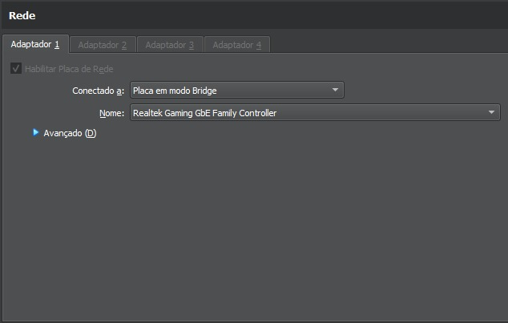
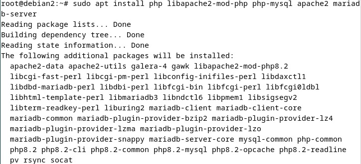
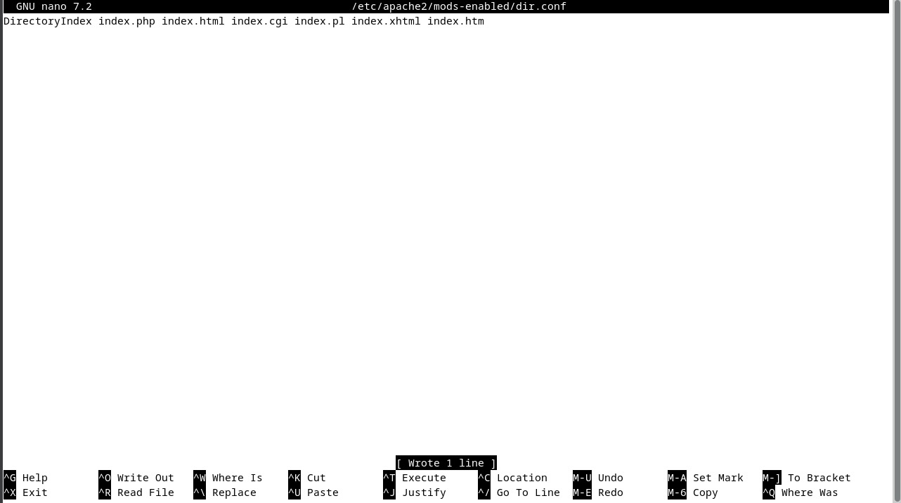

Configuração Inicial da Máquina Linux
Ajustando o Adaptador de Rede
Para acessar o IP da máquina Linux no navegador do Windows, é necessário colocar o adaptador 1 em modo bridge.

Instalando Pacotes Necessários
Execute os seguintes comandos para instalar o Apache, PHP, e MariaDB:
sudo apt install php libapache2-mod-php php-mysql apache2 mariadb-server 
Em seguida, execute o comando para configurar o MySQL: sudo mysql_secure_installation
Ajustes no Apache
Configurando o Apache para Priorizar o index.php
Edite o arquivo de configuração do Apache para garantir que o index.php seja carregado primeiro:
sudo nano /etc/apache2/mods-enabled/dir.conf 